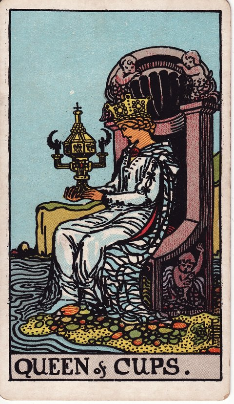

컵 · 타로 카드 백과사전
컵 퀸

정방향
키워드: 깊은 공감 · 직관 · 정서적 성숙 · 섬세한 눈치 · 속뜻 읽기 · 말없이 전해지는 마음
조언: 직관이 전하는 신호를 믿고 상대를 깊이 이해해보세요.
연애운
솔로
직관적으로 좋은 사람을 알아보는 시기입니다. 상대의 마음을 세심하게 살피는 태도가 좋은 인연으로 이어질 수 있어요.
커플
깊은 공감과 배려로 관계가 성숙해지는 시기입니다. 상대의 말 뒤에 숨은 마음까지 헤아려보세요.
재물운
소비
직관적으로 필요한 곳에 지출하는 균형 잡힌 시기입니다. 감정에 흔들리지 않는 소비 기준을 유지해보세요.
투자
직관적으로 좋은 재정 판단을 내릴 수 있는 시기입니다. 그 직감을 데이터로도 한 번 더 검증해보세요.
취업운
구직
공감 능력이 면접이나 상담에서 좋은 인상을 남기는 시기입니다. 진솔한 태도로 상대의 신뢰를 얻어보세요.
이직
공감 능력으로 주변과 좋은 관계를 맺는 시기입니다. 새로운 환경에서도 이 강점을 잘 살려보세요.
직장운
팀워크
동료들과의 관계에서 섬세한 배려가 신뢰를 더하는 시기입니다. 동료의 어려움을 세심하게 살펴주는 태도가 신뢰를 쌓습니다.
개인성과
직관적인 판단이 업무에 좋은 성과로 이어지는 시기입니다. 그 감각을 믿고 자신 있게 나아가 보세요.
사업운
창업준비
고객의 마음을 잘 읽어 사업 아이템을 다듬는 시기입니다. 이 공감 능력이 사업의 큰 강점이 될 수 있어요.
운영중
숫자 너머의 흐름까지 감으로 잡아내는 능력이 사업 판단에 빛을 발하는 시기입니다. 고객과 직원의 마음을 헤아리는 태도가 신뢰를 쌓습니다.
학업운
시험준비
직관적인 이해력이 학습에 도움이 되는 시기입니다. 감으로 파악한 내용을 꼼꼼히 정리해보세요.
진로고민
타인의 마음을 이해하는 분야에 적성을 발견하는 시기입니다. 이 공감 능력을 살릴 수 있는 진로를 찾아보세요.
건강운
신체
정서적 안정이 컨디션에도 좋은 영향을 주는 시기입니다. 마음의 평온이 몸의 회복에도 큰 도움이 됩니다.
정신
타인의 감정을 세심하게 헤아리는 만큼 마음이 넓어지는 시기입니다. 그만큼 자신의 마음도 함께 돌봐주세요.
대인관계운
새로운 인연
따뜻한 공감으로 새로운 사람과 쉽게 마음을 나누는 시기입니다. 진심 어린 경청이 좋은 관계의 시작이 됩니다.
기존 관계
상대의 어려움을 내 일처럼 헤아리며 관계가 두터워지는 시기입니다. 상대의 어려움에 진심으로 귀 기울여보세요.
명예운
따뜻한 인품으로 존경받는 시기입니다. 진심 어린 배려가 사람들의 마음을 얻는 힘이 됩니다.
이사운
직감적으로 좋은 곳을 찾아 이동하는 시기입니다. 그 직관을 믿고 편안하게 결정해도 좋습니다.
자식운
깊은 공감으로 아이의 마음을 이해하는 시기입니다. 아이의 말 너머 숨은 감정까지 헤아려보세요.
역방향
키워드: 감정 과몰입 · 경계 흐려짐 · 자기 상실 · 젖어드는 감정 · 떠안은 부탁 · 몫 구분하기
조언: 타인의 감정에 휩쓸리기 전에 자신을 지키는 선을 그어보세요.
연애운
솔로
상대의 감정에 지나치게 이입해 자신을 잃을 수 있는 시기입니다. 공감하되 자신의 감정도 함께 챙기세요.
커플
감정에 지나치게 휩쓸려 경계가 흐려질 수 있는 시기입니다. 상대를 위한다는 이유로 자신을 소홀히 하지 마세요.
재물운
소비
타인의 부탁이나 감정에 휩쓸려 지출이 늘어날 수 있는 시기입니다. 거절해야 할 때는 분명히 선을 그어보세요.
투자
감정적인 판단이 재정에 좋지 않은 영향을 줄 수 있는 시기입니다. 직감과 감정을 구분해서 판단해보세요.
취업운
구직
면접관의 반응에 지나치게 신경 쓰다 위축될 수 있는 시기입니다. 타인의 평가보다 자신의 강점에 집중해보세요.
이직
감정 기복이 업무에 영향을 줄 수 있는 시기입니다. 새로운 환경에 적응하며 감정을 다스리는 시간이 필요합니다.
직장운
팀워크
팀 분위기에 지나치게 예민해지며 평정심을 잃기 쉬운 시기입니다. 팀 분위기에 지나치게 휘둘리지 않도록 중심을 잡아보세요.
개인성과
동료의 부탁을 거절하지 못해 업무 부담이 늘어날 수 있는 시기입니다. 스스로의 한계를 분명히 밝혀보세요.
사업운
창업준비
정에 이끌려 검증 없이 사업 파트너나 아이템을 결정하다 낭패를 볼 수 있는 시기입니다. 마음이 끌리더라도 근거는 따로 확인해보세요.
운영중
직원이나 고객의 요구에 지나치게 맞추다 지칠 수 있는 시기입니다. 원칙과 배려 사이의 균형을 찾아보세요.
학업운
시험준비
감정에 휘둘려 집중이 흐트러질 수 있는 시기입니다. 주변 상황에 흔들리지 않는 학습 공간을 마련해보세요.
진로고민
타인의 기대에 맞추다 자신의 적성을 놓칠 수 있는 시기입니다. 스스로의 마음이 원하는 방향을 먼저 확인해보세요.
건강운
신체
감정 기복이 컨디션 난조로 이어질 수 있는 시기입니다. 감정을 다스리는 것이 몸의 회복에도 중요합니다.
정신
타인의 감정을 떠안다 자신이 지칠 수 있는 시기입니다. 공감과 소진 사이에서 적절한 거리를 두어보세요.
대인관계운
새로운 인연
처음 만난 사람의 사정에 너무 깊이 공감한 나머지 적정한 거리를 두지 못할 수 있는 시기입니다. 알게 된 지 얼마 안 된 사이일수록 서두르지 않는 것이 좋습니다.
기존 관계
상대의 사정을 헤아리다 정작 자신의 입장은 챙기지 못할 수 있는 시기입니다. 관계 속에서도 자신을 지키는 선이 필요합니다.
명예운
감정 기복이 평판에 영향을 줄 수 있는 시기입니다. 일관된 태도로 신뢰를 지켜가야 합니다.
이사운
정든 곳에 대한 아쉬운 마음이 이동 결정을 계속 미루게 할 수 있는 시기입니다. 미련은 인정하되 필요한 절차는 먼저 진행해보세요.
자식운
감정 기복이 아이와의 관계에 영향을 줄 수 있는 시기입니다. 아이 앞에서는 자신의 감정을 조금 더 다스려보세요.
같은 슈트: 컵 에이스 · 컵 2 · 컵 3 · 컵 4 · 컵 5 · 컵 6 · 컵 7 · 컵 8 · 컵 9 · 컵 10 · 컵 시종 · 컵 기사 · 컵 퀸 · 컵 킹
홈에서 직접 카드 뽑아보기 ↗